◆舉辦期間◆
2022年5月11日(三) 19:00～5月18日(三) 11:59
※本頁面皆為開發中圖片。會有與實際圖片相異的情況。
※在2018年12月31日(二) 23:00以後新配信的主線故事及期間限定活動、一部份關卡、宣傳活動及召喚中，會顯示隱藏真名的對象從者真名。
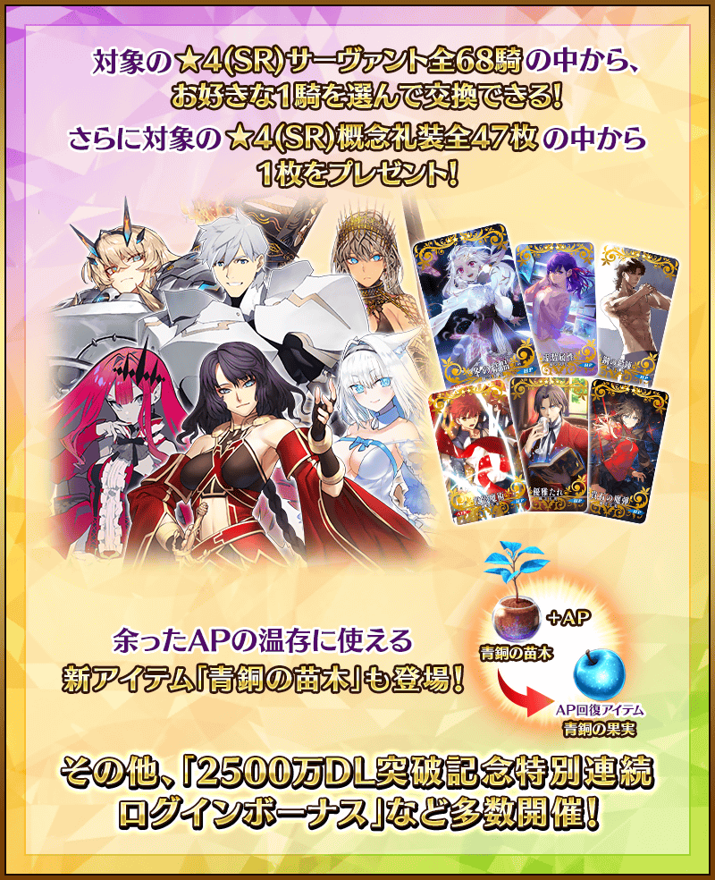
【2500萬DL記念的特別宣傳活動！】 ■贈送可交換1位喜愛★4(SR)從者的「2500萬DL記念券〔從者〕」！ ■贈送可從對象中交換1張喜愛★4(SR)概念禮裝的「2500萬DL記念券〔概念禮裝〕」！ ■「贈送1位喜愛★4(SR)從者＆概念禮裝！」官方推特的RT數達成10萬贈送聖晶石30個！ ■2500萬DL突破記念特別連續登入獎勵＋特別次數登入獎勵舉辦！ ■以期間限定在「限定任務」追加主線關卡的任務！
【新道具追加！】 ■保存多餘AP來使用的新道具「青銅樹苗」登場！
【從者育成的機會】 ■從者・概念禮裝強化的大成功＆極大成功率以期間限定2倍！ ■「蒐集種火」及「修練場」關卡以期間限定開放全星期份！ ■新追加帕西瓦爾的幕間物語！
【達文西工房充實】 ■在達文西工房的「稀有稜鏡交換」追加道具！ ■貞德〔Alter〕(Avenger)的靈衣開放權追加至達文西工房的「靈衣縫製」！
【功能修改】 ■從者及概念禮裝的保管欄位擴大！ ■能跟隨可能上限擴張到10名！ ■在教學召喚中抽出對象從者翻新！ ■寶具演出的全螢幕顯示對應從者擴張！ ■維修追加的新功能介紹！
在下述的配發期間中登入的話，贈送1張可從全68位對象★4(SR)從者之中，選擇喜愛的1位的「2500萬DL記念券〔從者〕」！
◆「2500萬DL記念券〔從者〕」配發期間◆
2022年5月11日(三) 19:00～5月18日(三) 11:59
※所有的御主都是對象(新御主玩家必須推進至通過「特異點F 炎上汙染都市 冬木 第3節 進行度1」)。
◆達文西工房的交換條件◆
2022年5月20日(五) 11:59前通過「特異點F 炎上汙染都市 冬木」的御主對象
◆「2500萬DL記念券〔從者〕」交換期間◆
2022年5月13日(五) 17:00～5月20日(五) 11:59
◆券的交換方法◆
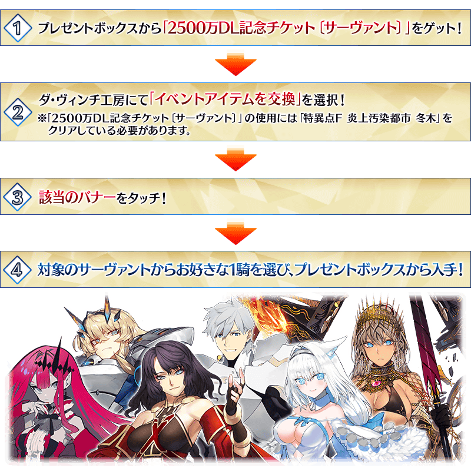
◆有關券的注意◆ ※請注意超過配發期間的話無法領取「2500萬DL記念券〔從者〕」。 ※請注意「2500萬DL記念券〔從者〕」配發期間與交換期間不同。 ※交換後的★4(SR)從者會送到禮物箱，「2500萬DL記念券〔從者〕」會消失。 ※請注意就算未交換的情況，在交換期間結束後「2500萬DL記念券〔從者〕」也會消失。 ※請注意未滿足交換條件的情況，就算持有券的情況也無法交換★4(SR)從者。
◆有關從者的注意◆ ※在對象從者不包含期間限定從者及活動報酬的從者。 ※阿爾托莉亞・潘德拉剛〔Alter〕(Saber)、高文、尼祿・克勞狄烏斯(Saber)、巴格斯特(妖精騎士高文)、柳生但馬守宗矩、馬嘶、Emiya〔Alter〕、崔斯坦、芭班・希(妖精騎士崔斯坦)、阿爾托莉亞・潘德拉剛〔Alter〕(Lancer)、凱妮絲(Lancer)、李書文(Lancer)、示巴的女王(米德拉什的Caster)、湯瑪斯・愛迪生、美狄亞〔Lily〕、加藤段藏、虞美人(Assassin)、戈爾貢就算通過各章前也能交換。 ※「★4(SR)巴格斯特(妖精騎士高文)」「★4(SR)芭班・希(妖精騎士崔斯坦)」的靈基再臨第3階段包含「Lostbelt No.6 妖精圓卓領域 阿瓦隆・勒菲 星辰誕生之刻」的劇透。敬請注意。
◆贈送對象從者◆
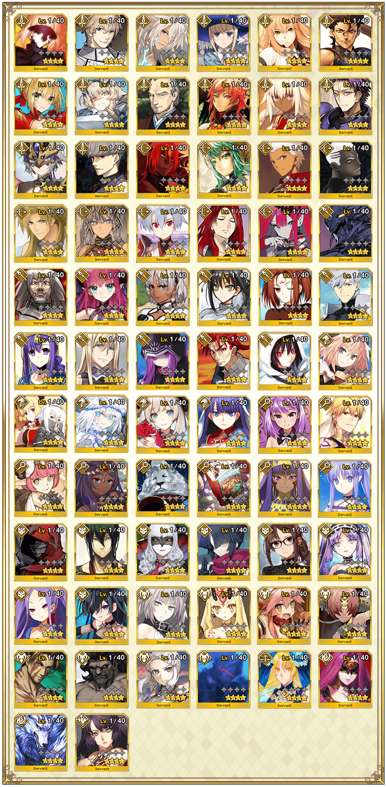
| 職階 | 從者名 | 職階 | 從者名 |
|---|---|---|---|
| Saber | 阿爾托莉亞・潘德拉剛〔Alter〕 | Caster | 海倫娜・布拉瓦茨基 |
| 高文 | 吉爾伽美什 | ||
| 齊格飛 | 喀耳刻(俄刻阿諾斯的Caster) | ||
| 夏爾・德翁 | 示巴的女王(米德拉什的Caster) | ||
| 鈴鹿御前 | 湯瑪斯・愛迪生 | ||
| 迪爾姆德・奧德利暗 | 童謠 | ||
| 尼祿・克勞狄烏斯 | 尼托克里絲 | ||
| 巴格斯特(妖精騎士高文) | 美狄亞〔Lily〕 | ||
| 柳生但馬守宗矩 | Assassin | Emiya〔Assassin〕 | |
| 羅摩 | 燕青(新宿的Assassin) | ||
| 拉克什米・芭伊 | 卡米拉 | ||
| 蘭斯洛特 | 加藤段藏 | ||
| 蘭陵王 | 虞美人 | ||
| 渡邊綱 | 絲西娜 | ||
| Archer | 馬嘶 | 武則天(不夜城的Assassin) | |
| 阿塔蘭塔 | 望月千代女(Assassin・樂園) | ||
| Emiya | Berserker | 阿塔蘭塔〔Alter〕 | |
| Emiya〔Alter〕 | 茨木童子 | ||
| 凱隆 | 玉藻貓 | ||
| 潔諾比亞 | 弗蘭肯斯坦 | ||
| 巴御前(Archer・地獄) | 貝奧武夫 | ||
| 崔斯坦 | 海克力斯 | ||
| 芭班・希(妖精騎士崔斯坦) | 彭忒西勒亞(黃金國的Berserker) | ||
| Lancer | 阿爾托莉亞・潘德拉剛 〔Alter〕 | 蘭斯洛特 | |
| 弗拉德三世〔EXTRA〕 | Ruler | 阿斯特蕾亞 | |
| 伊莉莎白・巴托里 | |||
| 凱妮絲 | Avenger | 戈爾貢 | |
| 秦良玉 | 海森・羅伯(新宿的Avenger) | ||
| 哪吒 | |||
| 帕西瓦爾 | Pretender | 赫費斯提翁 | |
| 帕爾瓦蒂 | |||
| 芬恩・麥克庫爾 | |||
| 美杜莎 | |||
| 李書文 | |||
| 瓦爾基里 | |||
| Rider | 阿斯托爾福 | ||
| 安妮・伯妮＆瑪莉・瑞德 | |||
| 多布雷尼亞・尼基季奇 | |||
| 瑪莉・安東尼 | |||
| 瑪爾大 |
※「★4(SR)巴格斯特(妖精騎士高文)」是「妖精騎士高文」靈基再臨到第2階段後名稱會變成「巴格斯特」。 ※「★4(SR)芭班・希(妖精騎士崔斯坦)」是「妖精騎士崔斯坦」靈基再臨到第2階段後名稱會變成「芭班・希」。
在下述的配發期間中登入的話，贈送1張可從成為對象的全47張★4(SR)概念禮裝之中，選擇喜愛的1張交換的「2500萬DL記念券〔概念禮裝〕」！
※關於在交換對象包含的可在通過第2部各章後入手的概念禮裝，已通過章節的概念禮裝做為交換對象。
◆「2500萬DL記念券〔概念禮裝〕」配發期間◆
2022年5月11日(三) 19:00～5月18日(三) 11:59
※所有的御主都是對象(新御主玩家必須推進至通過「特異點F 炎上汙染都市 冬木 第3節 進行度1」)。
◆達文西工房的交換條件◆
2022年5月18日(三) 11:59前通過「特異點F 炎上汙染都市 冬木」的御主對象
◆「2500萬DL記念券〔概念禮裝〕」交換期間◆
2022年5月11日(三) 19:00～5月18日(三) 11:59
※交換時請注意「2500萬DL記念券〔從者〕」的交換期間與結束時間不同。
◆券的交換方法◆
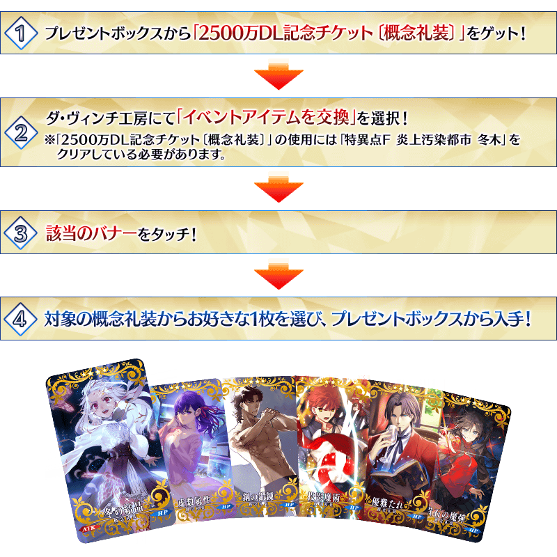
◆有關券的注意◆ ※請注意超過上述配發期間的話無法領取「2500萬DL記念券〔概念禮裝〕」。 ※交換後的★4(SR)概念禮裝會送到禮物箱，「2500萬DL記念券〔概念禮裝〕」會消失。 ※請注意就算未交換的情況，在交換期間結束後「2500萬DL記念券〔概念禮裝〕」也會消失。 ※請注意未滿足交換條件的情況，就算持有券的情況也無法交換★4(SR)概念禮裝。
◆有關概念禮裝的注意◆ ※在對象概念禮裝不包含期間限定概念禮裝及活動報酬的概念禮裝。 ※在通過第2部各章後追加到故事召喚的概念禮裝，只限有通過對象章節的情況才是交換對象。
◆贈送對象概念禮裝◆
| 插圖 | 概念禮裝詳細 | 插圖 | 概念禮裝詳細 |
|---|---|---|---|
|
★★★★SR 鋼の鍛錬 ATK 0 HP 400(最大:1500) 技能 自身的防禦力提升15% ◆最大解放時效果◆ 自身的防禦力提升 20%> |
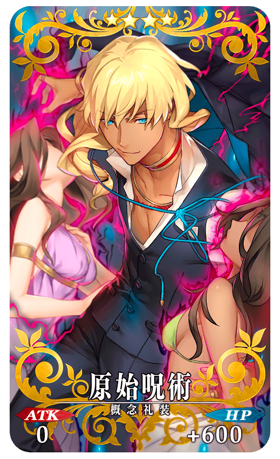 |
★★★★SR 原始呪術 ATK 0 HP 600(最大:2250) 技能 自身的弱體耐性提升25% ◆最大解放時效果◆ 自身的弱體耐性提升30% |
|
| 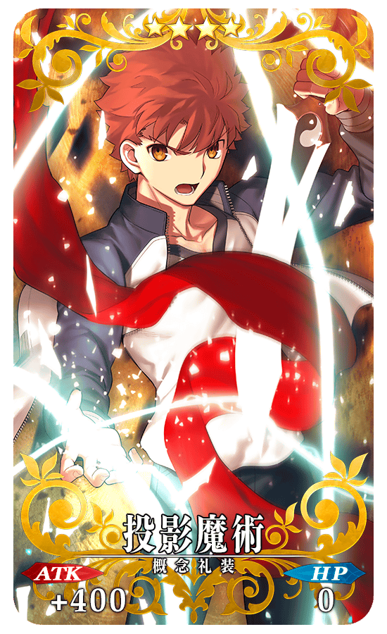 |
★★★★SR 投影魔術 ATK 400(最大:1500) HP 0 技能 自身的Arts卡的性能提升15% ◆最大解放時效果◆ 自身的Arts卡的性能提升20% |
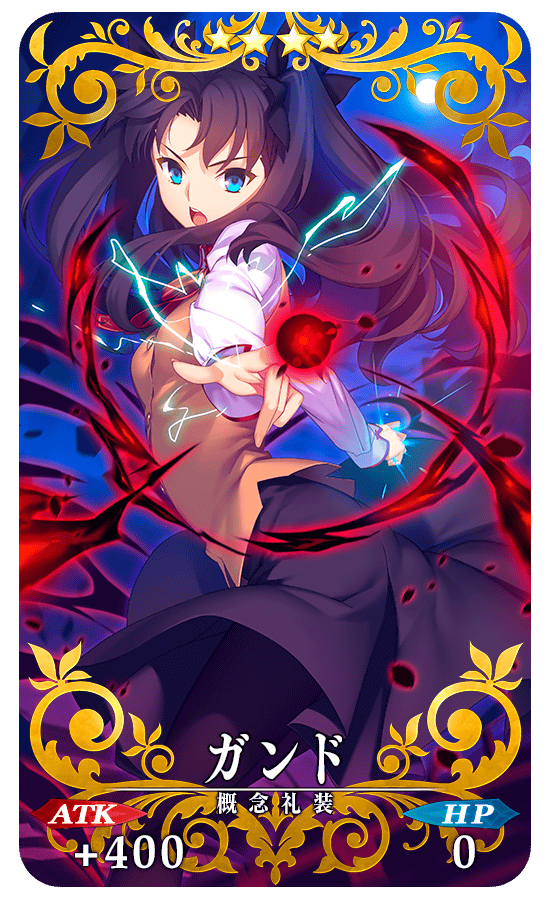 |
★★★★SR ガンド ATK 400(最大:1500) HP 0 技能 自身的Quick卡的性能提升15% ◆最大解放時效果◆ 自身的Quick卡的性能提升20% |
|
★★★★SR 緑の破音 ATK 400(最大:1500) HP 0 技能 自身的Buster卡的性能提升15% ◆最大解放時效果◆ 自身的Buster卡的性能提升20% |
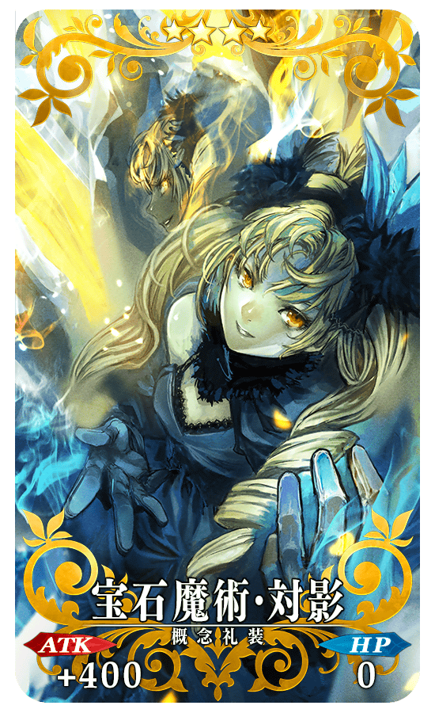 |
★★★★SR 寶石魔術・対影 ATK 400(最大:1500) HP 0 技能 自身的爆擊威力提升25% ◆最大解放時效果◆ 自身的爆擊威力提升30% |
|
|
★★★★SR 優雅たれ ATK 200(最大:750) HP 300(最大:1125) 技能 自身的星星發生率提升25% ◆最大解放時效果◆ 自身的星星發生率提升30% |
★★★★SR 虚数魔術 ATK 200(最大:750) HP 300(最大:1125) 技能 自身的NP以60%累積狀態開始戰鬥 ◆最大解放時效果◆ 自身的NP以75%累積狀態開始戰鬥 |
||
| 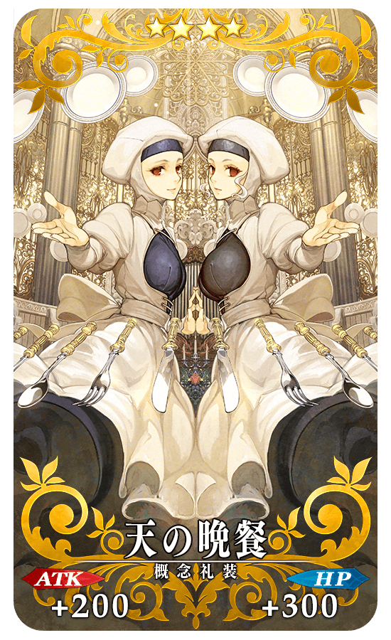 |
★★★★SR 天の晩餐 ATK 200(最大:750) HP 300(最大:1125) 技能 自身的NP獲得量提升25% ◆最大解放時效果◆ 自身的NP獲得量提升30% |
★★★★SR 天使の詩 ATK 400(最大:1500) HP 0 技能 自身的寶具威力提升25% ◆最大解放時效果◆ 自身的寶具威力提升30% |
|
|
★★★★SR 封印指定 執行者 ATK 400(最大:1500) HP 0 技能 自身的星星集中度提升600% ◆最大解放時效果◆ 自身的星星集中度提升800% |
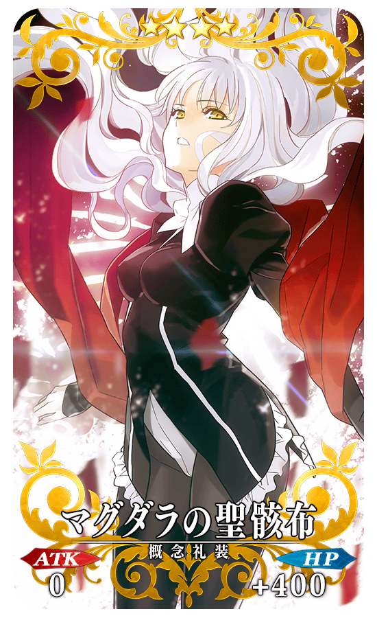 |
★★★★SR マグダラの聖骸布 ATK 0 HP 400(最大:1500) 技能 對自身賦予〔男性〕特防25%狀態 ◆最大解放時效果◆ 對自身賦予〔男性〕特防30%狀態 |
|
|
★★★★SR 一の太刀 ATK 400(最大:1500) HP 0 技能 對自身賦予必中狀態＆自身的Quick卡的性能提升8% ◆最大解放時效果◆ 對自身賦予必中狀態＆自身的Quick卡的性提升能10% |
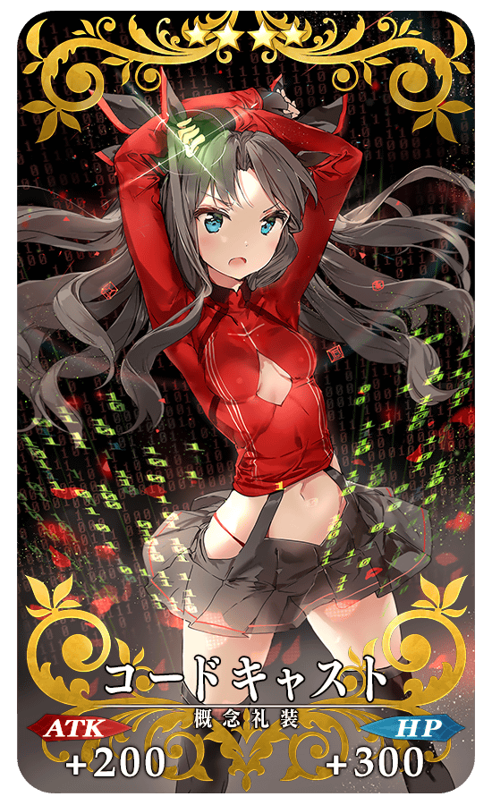 |
★★★★SR コードキャスト ATK 200(最大:750) HP 300(最大:1125) 技能 自身的攻擊力提升25%(3回合)＆防禦力提升25%(3回合) ◆最大解放時效果◆ 自身的攻擊力提升30%(3回合)＆防禦力提升30%(3回合) |
|
| 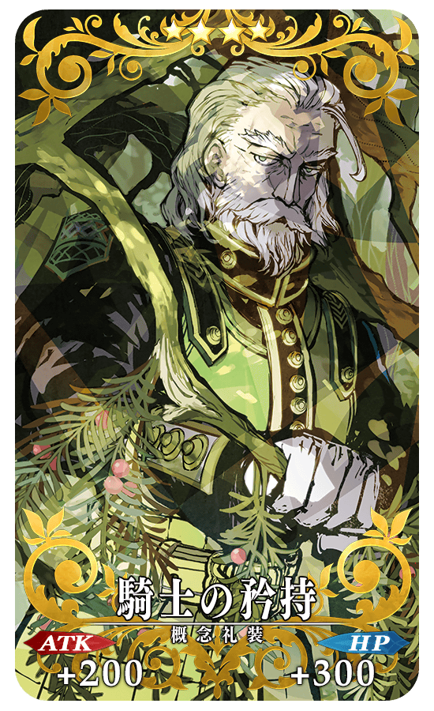 |
★★★★SR 騎士の矜持 ATK 200(最大:750) HP 300(最大:1125) 技能 自身的爆擊威力提升40%＆防禦力下降20%【副作用】 ◆最大解放時效果◆ 自身的爆擊威力提升50%＆防禦力下降20%【副作用】 |
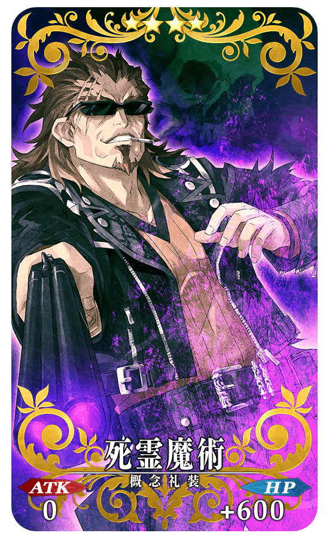 |
★★★★SR 死霊魔術 ATK 0 HP 600(最大:2250) 技能 賦予在自身的HP0時以機率發動根性狀態(HP回復500) ◆最大解放時效果◆ 賦予在自身的HP0時以機率發動根性狀態(HP回復1000) |
| 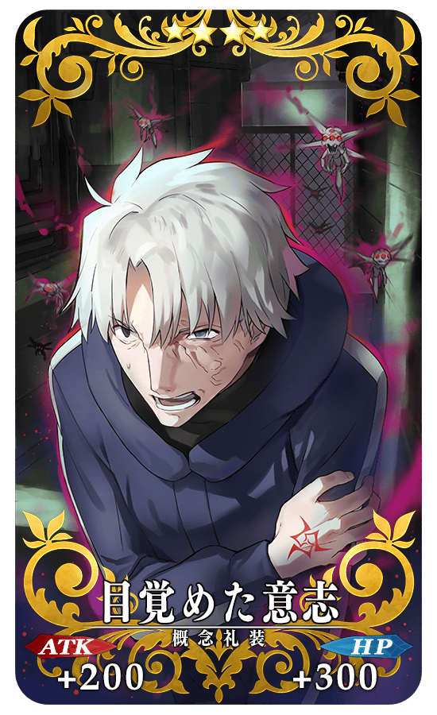 |
★★★★SR 目覚めた意志 ATK 200(最大:750) HP 300(最大:1125) 技能 對自身每回合以機率賦予NP12%獲得狀態＆賦予每回合HP500減少狀態【副作用】 ◆最大解放時效果◆ 對自身賦予每回合以機率NP15%獲得狀態＆賦予每回合HP500減少狀態【副作用】 |
★★★★SR 千年黄金樹 ATK 0 HP 600(最大:2250) 技能 對自身賦予最大HP上昇效果每回合(每回合+200・最大+3000) ◆最大解放時效果◆ 對自身賦予最大HP上昇效果每回合(每回合+300・最大+3000) |
|
| 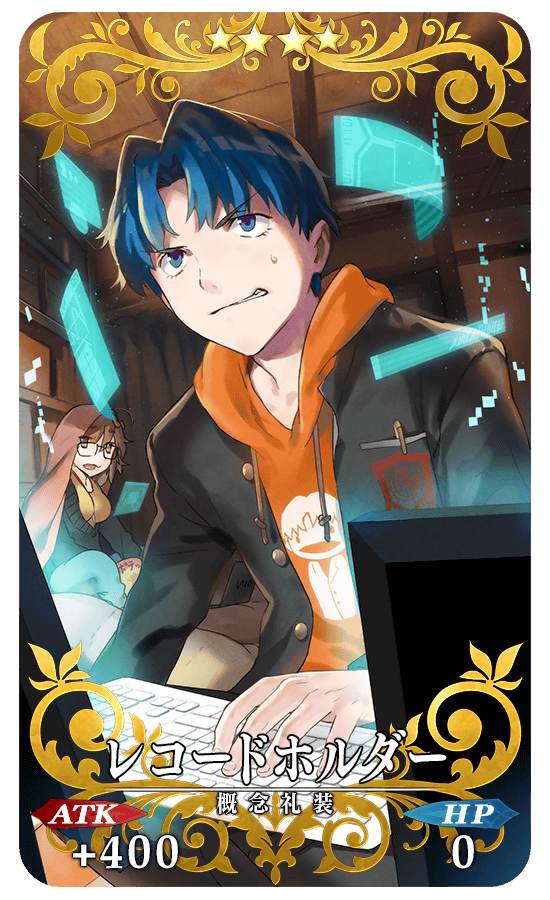 |
★★★★SR レコードホルダー ATK 400(最大:1500) HP 0 技能 自身的弱體賦予成功率提升15% ◆最大解放時效果◆ 自身的弱體賦予成功率提升20% |
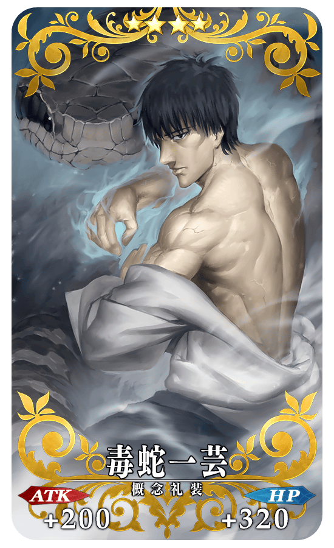 |
★★★★SR 毒蛇一芸 ATK 200(最大:750) HP 320(最大:1200) 技能 自身的Arts卡的性能提升30%(3回合) ◆最大解放時效果◆ 自身的Arts卡的性能提升40%(3回合) |
| 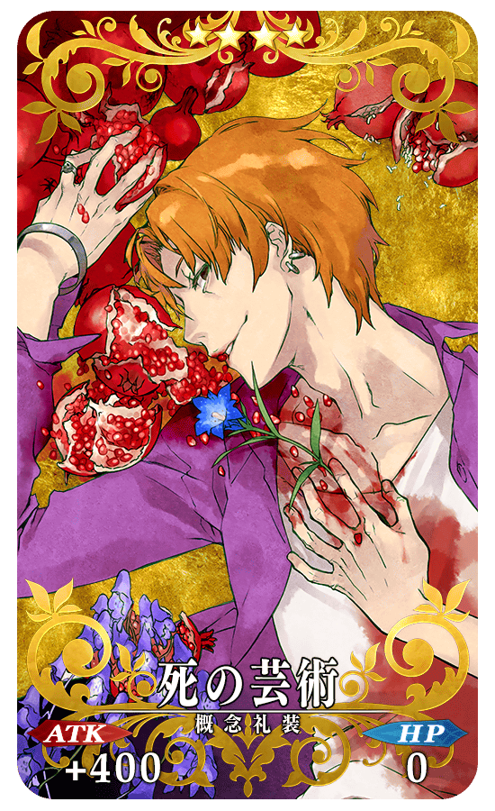 |
★★★★SR 死の芸術 ATK 400(最大:1500) HP 0 技能 對自身賦予〔人型〕特攻25%狀態 ◆最大解放時效果◆ 對自身賦予〔人型〕特攻30%狀態 |
★★★★SR 柔らかな慈愛 ATK 0 HP 600(最大:2250) 技能 自身的給予HP回復量提升15% ◆最大解放時效果◆ 自身的給予HP回復量提升20% |
|
|
★★★★SR 恋知らぬ令嬢 ATK 200(最大:750) HP 320(最大:1200) 技能 對自身賦予每回合NP4%獲得狀態＆Quick卡的性能提升10% ◆最大解放時效果◆ 對自身賦予每回合NP5%獲得狀態＆Quick卡的性能提升12% |
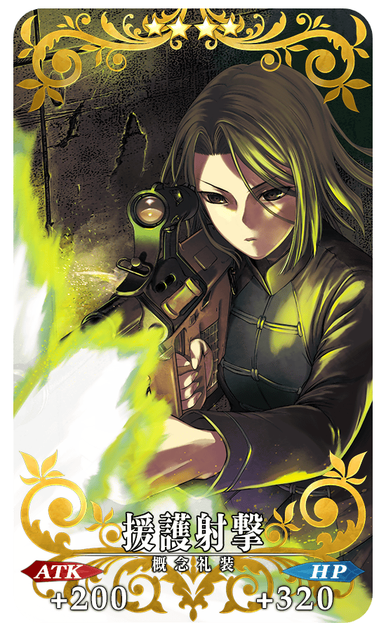 |
★★★★SR 援護射撃 ATK 200(最大:750) HP 320(最大:1200) 技能 對自身賦予傷害加成400狀態＆爆擊威力提升15% ◆最大解放時效果◆ 對自身賦予傷害加成600狀態＆爆擊威力提升20% |
|
|
★★★★SR ルームガーダー ATK 0 HP 600(最大:2250) 技能 自身的星星集中度提升300%＆賦予傷害減免300狀態 ◆最大解放時效果◆ 自身的星星集中度提升400%＆賦予傷害減免400狀態 |
★★★★SR 最後の語り部 ATK 200(最大:750) HP 320(最大:1200) 技能 對自身賦予每回合NP4%獲得狀態＆寶具威力提升10% ◆最大解放時效果◆ 對自身賦予每回合NP5%獲得狀態＆寶具威力提升15% |
||
| 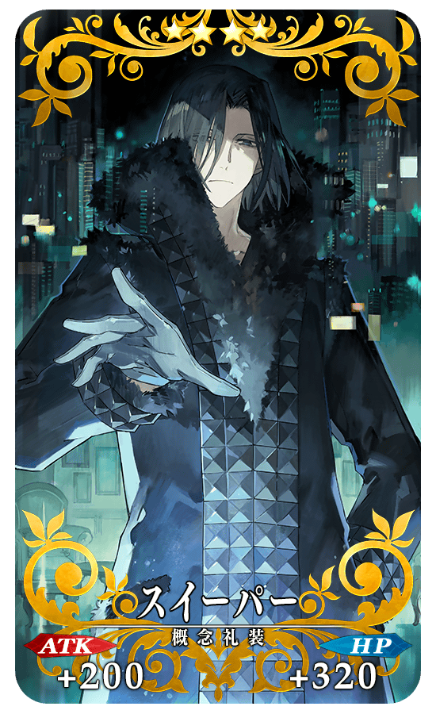 |
★★★★SR スイーパー ATK 200(最大:750) HP 320(最大:1200) 技能 自身的Arts卡性能提升8%＆爆擊威力提升15% ◆最大解放時效果◆ 自身的Arts卡性能提升10%＆爆擊威力提升20% |
★★★★SR 彼方の先には ATK 200(最大:750) HP 320(最大:1200) 技能 對自身賦予每回合NP4%獲得狀態＆Buster卡的性能提升10% ◆最大解放時效果◆ 對自身賦予每回合NP5%獲得狀態＆Buster卡的性能12%提升 |
|
|
★★★★SR ラ・フォリア ATK 200(最大:750) HP 320(最大:1200) 技能 自身的Buster卡性能提升10%＆HP回復量提升10% ◆最大解放時效果◆ 自身的Buster卡性能提升15%＆HP回復量提升20% |
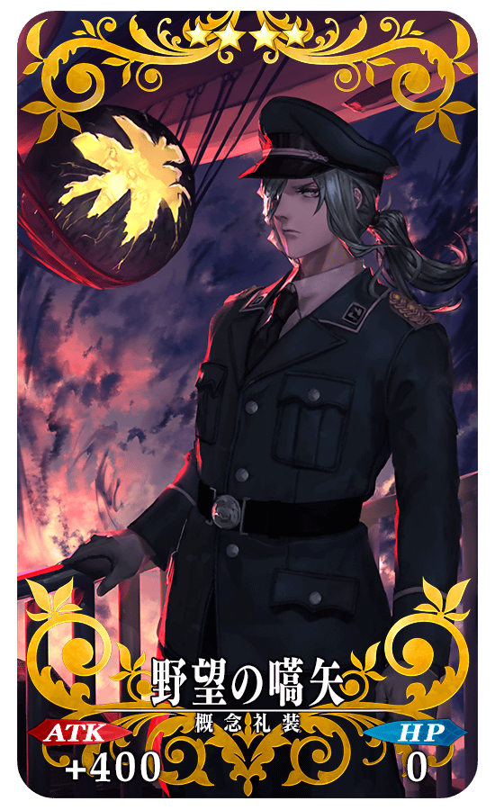 |
★★★★SR 野望の嚆矢 ATK 400(最大:1500) HP 0 技能 自身的Arts卡性能提升10%＆HP回復量提升10% ◆最大解放時效果◆ 自身的Arts卡性能提升15%＆HP回復量提升20% |
|
|
★★★★SR リズムド・バース ATK 0 HP 600(最大:2250) 技能 自身的NP獲得量提升15%＆寶具使用時的蓄力階段加升1階段(1次) ◆最大解放時效果◆ 自身的NP獲得量提升20%＆寶具使用時的蓄力階段加升1階段(1次) |
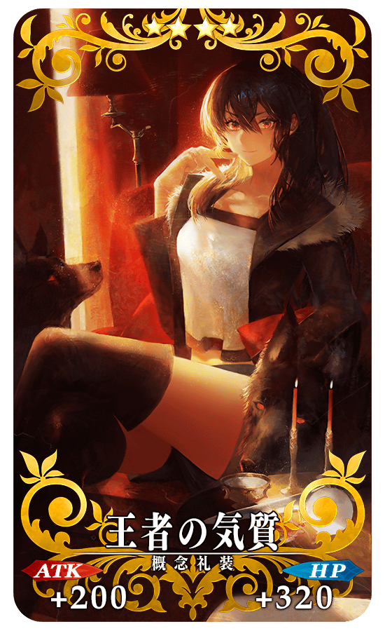 |
★★★★SR 王者の気質 ATK 200(最大:750) HP 320(最大:1200) 技能 自身的Quick卡性能提升8%＆NP獲得量提升15% ◆最大解放時效果◆ 自身的Quick卡性能提升10%＆NP獲得量提升20% |
|
| 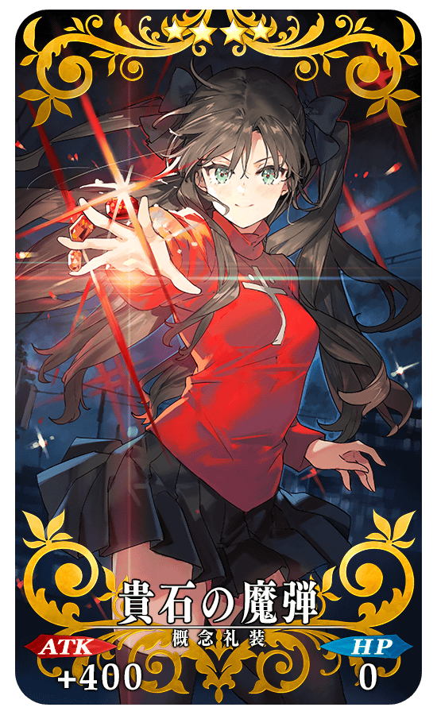 |
★★★★SR 貴石の魔弾 ATK 400(最大:1500) HP 0 技能 自身的Buster卡性能提升8%＆NP以30%累積狀態開始戰鬥 ◆最大解放時效果◆ 自身的Buster卡性能提升10%＆NP以50%累積狀態開始戰鬥 |
★★★★SR 虚数属性 ATK 400(最大:1500) HP 0 技能 自身的Quick卡性能提升8%＆NP以30%累積狀態開始戰鬥 ◆最大解放時效果◆ 自身的Quick卡性能提升10%＆NP50%以累積狀態開始戰鬥 |
|
| 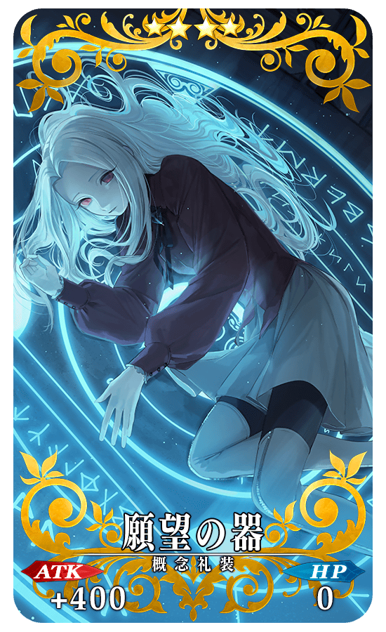 |
★★★★SR 願望の器 ATK 400(最大:1500) HP 0 技能 自身的寶具威力提升10%＆NP以30%累積狀態開始戰鬥 ◆最大解放時效果◆ 自身的寶具威力提升15%＆NP以50%累積狀態開始戰鬥 |
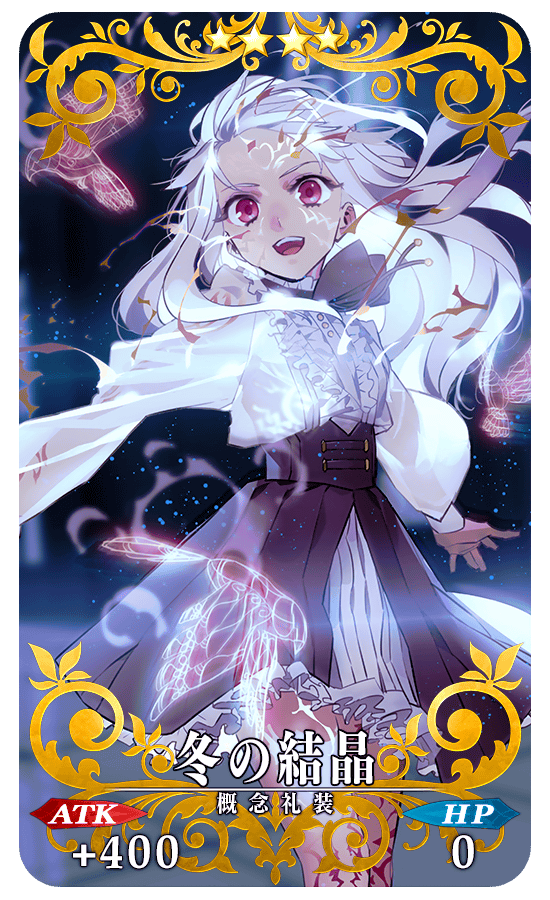 |
★★★★SR 冬の結晶 ATK 400(最大:1500) HP 0 技能 自身的NP以60%累積狀態開始戰鬥 ◆最大解放時效果◆ 自身的NP75%以累積狀態開始戰鬥 |
| 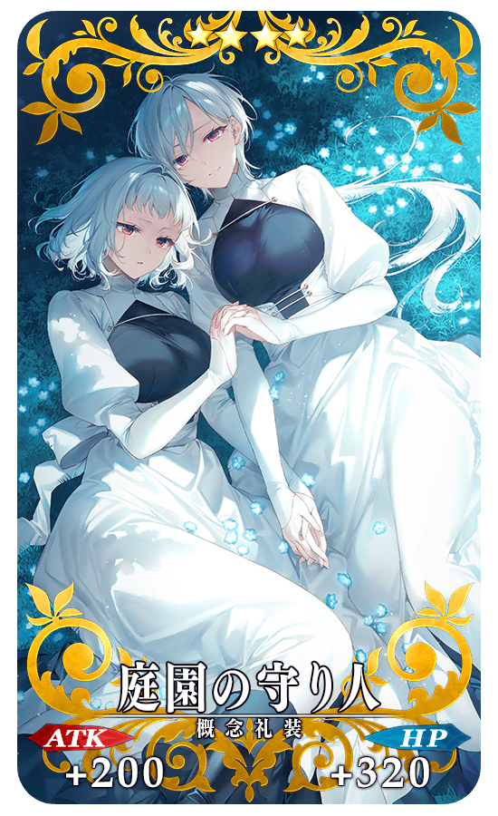 |
★★★★SR 庭園の守り人 ATK 200(最大:750) HP 320(最大:1200) 技能 自身的NP獲得量提升15%＆NP以30%累積狀態開始戰鬥 ◆最大解放時效果◆ 自身的NP獲得量提升20%＆NP以50%累積狀態開始戰鬥 |
★★★★SR 華の楽土 ATK 400(最大:1500) HP 0 技能 自身的星星集中度提升300%＆Quick卡性能提升8% ◆最大解放時效果◆ 自身的星星集中度提升400%＆Quick卡性能提升10% |
|
|
★★★★SR 告解の惑い場 ATK 0 HP 600(最大:2250) 技能 對自身賦予〔男性〕特防15%狀態＆遭傷害時的NP獲得量提升25% ◆最大解放時效果◆ 對自身賦予〔男性〕特防20%狀態＆遭傷害時的NP獲得量提升30% |
在通過第2部各章後追加的贈送對象概念禮裝
| 插圖 | 概念禮裝詳細 | 插圖 | 概念禮裝詳細 |
|---|---|---|---|
|
【交換條件:通過 Lostbelt No.1 永久凍土帝國 安娜塔西亞 獸國的皇女】 ★★★★SR ???? ATK 400(最大:1500) HP 0 技能 自身的Buster卡性能提升8%＆爆擊威力提升10%＆星星發生率提升10% ◆最大解放時效果◆ 自身的Buster卡性能提升10%＆爆擊威力提升15%＆星星發生率提升15% |
【交換條件:通過 Lostbelt No.2 無間冰焰世紀 諸神黃昏 不滅之火的好漢】 ★★★★SR ???? ATK 0 HP 600(最大:2250) 技能 對自身每回合HP200回復狀態賦予＆NP獲得量提升15% ◆最大解放時效果◆ 對自身賦予每回合HP300回復狀態＆NP獲得量提升20% |
||
|
【交換條件:通過 Lostbelt No.3 人智統合真國 SIN 紅之月下美人】 ★★★★SR ???? ATK 200(最大:750) HP 320(最大:1200) 技能 對自身賦予每回合NP4%獲得狀態＆NP獲得量提升10% ◆最大解放時效果◆ 對自身賦予每回合NP5%獲得狀態＆NP獲得量提升15% |
【交換條件:通過 Lostbelt No.4 創世滅亡輪廻 由伽・剎多羅 黑色最終之神】 ★★★★SR ???? ATK 0 HP 600(最大:2250) 技能 自身的HP回復量提升15%＆賦予傷害減免300狀態 ◆最大解放時效果◆ 自身的HP回復量提升20%＆賦予傷害減免400狀態 |
||
|
【交換條件:通過 Lostbelt No.5 神代巨神海洋 亞特蘭提斯 擊落神之日】 ★★★★SR ???? ATK 200(最大:750) HP 320(最大:1200) 技能 自身的Quick卡的性能提升6%＆Arts卡的性能提升6%＆Buster卡的性能提升6% ◆最大解放時效果◆ 自身的Quick卡的性能提升8%＆Arts卡的性能提升8%＆Buster卡的性能提升8% |
【交換條件:通過 Lostbelt No.5 星間都市山脈 奧林帕斯 擊落神之日】 ★★★★SR ???? ATK 200(最大:750) HP 320(最大:1200) 技能 對自身賦予每回合星星2個獲得狀態＆寶具威力提升10% ◆最大解放時效果◆ 對自身賦予每回合星星3個獲得狀態＆寶具威力提升15% |
||
|
【交換條件:通過 第2部 地獄界曼荼羅 平安京 轟雷一閃】 ★★★★SR ???? ATK 200(最大:750) HP 320(最大:1200) 技能 自身的Buster卡性能提升8%＆被爆擊發生耐性提升10% ◆最大解放時效果◆ 自身的Buster卡性能提升10%＆被爆擊發生耐性提升15% |
【交換條件:通過 Lostbelt No.6 妖精圓卓領域 阿瓦隆・勒菲 星辰誕生之刻】 ★★★★SR ???? ATK 200(最大:750) HP 320(最大:1200) 技能 在自身登場時獲得星星10個(1次)＆Arts卡性能提升3%＆寶具威力提升5% ◆最大解放時效果◆ 在自身登場時星星獲得12個(1次)＆Arts卡性能提升5%＆寶具威力提升10% |
※通過第2部各章可入手的概念禮裝名與插圖，考慮劇透而不刊載。敬請務必在通過各章通過時確認。
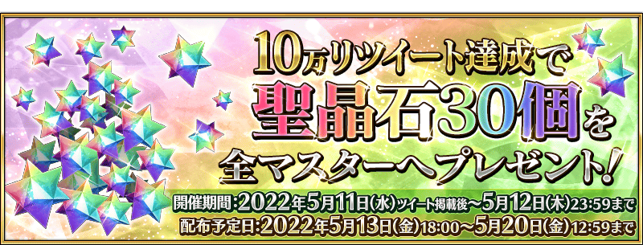
在官方推特上的「贈送1位喜愛★4(SR)從者＆概念禮裝！」推特的轉推數，下述的期間內達成10萬轉推的話，向有遊玩遊戲的所有御主贈送聖晶石30個(聖晶石召喚最多11次份)！ ※(聖晶石召喚最多11次份)限在同一個聖晶石召喚進行的情況。
■「Fate/Grand Order」官方推特 @fgoproject
◆舉辦期間◆
2022年5月11日(三) 官方推特上で的ツイート刊載後～5月12日(四) 22:59
◆配發預定日◆
2022年5月13日(五) 17:00～5月20日(五) 11:59的期間中，在初次進行登入的時間點，贈予至禮物箱。
◆贈送對象◆
所有的御主對象
※在舉辦期間內達成10萬轉推的情況，新御主玩家必須在配發預定最終日的5月20日(五) 11:59前推進至通過「特異點F 炎上汙染都市 冬木 第3節 進行度1」。
| 達成目標(轉推數) | 達成報酬 | |
|---|---|---|
| 10萬轉推 |

|
聖晶石 30個 |
※在舉辦期間內未到達達成目標轉推數及期間內未登入的情況，無法領取達成報酬。
為了記念2500萬DL突破，實施特別的登入獎勵。
在下述期間中7天內連續登入的話，贈送睿智的業火ALL★5(SSR)10張、白銀果實10個、1,000萬QP、黃金果實10個、英靈結晶・星之芙芙ALL★3(HP)10張、英靈結晶・太陽之芙芙ALL★3(ATK)10張、呼符10張(聖晶石召喚最多11次份)的豪華報酬！
並且，在同期間中登入5次(1天算1次)的話，合送魔力稜鏡200個、英靈結晶・流星之芙芙ALL★4(HP)1張、英靈結晶・日輪之芙芙ALL★4(ATK)1張、稀有稜鏡1個、傳承結晶1個！
◆舉辦期間◆
2022年5月12日(四) 3:00～5月19日(四) 2:59
◆贈送對象◆
2022年5月18日(三) 2:59前通過「特異點F 炎上汙染都市 冬木」的御主對象
※上述時間前，在管理室(ターミナル)畫面的關卡橫幅必須要有「CLEAR」的文字顯示。
【特別連續登入獎勵】
| 登入天數 | 贈送內容 | |
|---|---|---|
| 第1天 |

|
睿智的業火ALL★5(SSR) 10張 |
| 第2天 |

|
白銀果實 10個 |
| 第3天 |

|
1,000萬QP |
| 第4天 |

|
黃金果實 10個 |
| 第5天 |

|
英靈結晶・星之芙芙ALL★3(HP) 10張 |
| 第6天 |

|
英靈結晶・太陽之芙芙ALL★3(ATK) 10張 |
| 第7天 |

|
呼符 10張(聖晶石召喚最多11次份) |
※登入獎勵會在每天3:00配發。 ※連續登入天數中斷後，無法領取之後的禮物。 ※(聖晶石召喚最多11次份)限在同一個聖晶石召喚進行的情況。 ※最多能領取7次，但根據成為贈送對象的時間點，可能無法到此上限。
【特別次數登入獎勵】
| 登入次數 | 贈送內容 | |
|---|---|---|
| 第1次 |

|
魔力稜鏡 200個 |
| 第2次 |

|
英靈結晶・流星之芙芙ALL★4(HP) 1張 |
| 第3次 |

|
英靈結晶・日輪之芙芙ALL★4(ATK) 1張 |
| 第4次 |

|
稀有稜鏡 1個 |
| 第5次 |

|
傳承結晶 1個 |
※登入獎勵會在每天3:00配發。 ※合計5天內能領取，但根據成為贈送對象的時間點，可能無法到此上限。
下述的期間中，「御主任務」的「限定任務」中，以期間限定追加任務。
通過所有任務的話，可得到睿智的業火 ALL★5(SSR) 30張、魔力稜鏡180個、稀有稜鏡1個、聖晶石12個！
◆舉辦期間◆
2022年5月11日(三) 19:00～5月18日(三) 11:59
◆領取期間◆
2022年5月11日(三) 19:00～5月25日(三) 11:59
◆追加任務◆
| 任務名稱 | 任務達成報酬 | |
|---|---|---|
|
【2500萬DL突破記念】 推進第1部＆第2部的主線關卡的進行度1 |
|
聖晶石 1個 |
|
|
睿智的業火 ALL★5(SSR) 10張 | |
|
【2500萬DL突破記念】 推進第1部＆第2部的主線關卡的進行度2 |
|
聖晶石 1個 |
|
|
魔力稜鏡 60個 | |
|
【2500萬DL突破記念】 推進第1部＆第2部的主線關卡的進行度3 |
|
聖晶石 1個 |
|
|
睿智的業火 ALL★5(SSR) 10張 | |
|
【2500萬DL突破記念】 推進第1部＆第2部的主線關卡的進行度4 |
|
聖晶石 2個 |
|
|
魔力稜鏡 60個 | |
|
【2500萬DL突破記念】 推進第1部＆第2部的主線關卡的進行度5 |
|
聖晶石 2個 |
|
|
睿智的業火 ALL★5(SSR) 10張 | |
|
【2500萬DL突破記念】 推進第1部＆第2部的主線關卡的進行度6 |
|
聖晶石 2個 |
|
|
魔力稜鏡 60個 | |
|
【2500萬DL突破記念】 推進第1部＆第2部的主線關卡的進行度7 |
|
聖晶石 3個 |
|
|
稀有稜鏡 1個 | |
※請注意「【2500萬DL突破記念】任務」超過任務期限就無法達成。 ※請注意亞種特異點(從Ⅰ到Ⅳ)及Main Interlude的主線關卡為任務的對象外 ※已經有通過第1部及第2部全部的主線關卡的情況，本任務會成為自動達成的狀態。 ※請注意與每週日23:00更新的普通任務(Weekly)不同欄位，超過領取期間的話無法入手報酬。 ※就算達成「【2500萬DL突破記念】任務」，也不會計算在普通任務(Weekly)的任務進行度。 ※請注意舉辦期間與領取期間有所差異。
使用一部份AP可長出AP回復道具「青銅果實」的「青銅樹苗」新登場！
消耗「青銅樹苗」與御主一部份現在的AP(AP40)後，會長出可在任意時間點的回復40AP的道具「青銅果實」。
將回復到最大值的AP換成「青銅果實」，有效活用AP的自然回復功能，在必須AP不足時使用「青銅果實」，就能使用。
活用「青銅樹苗」，更有效過使用AP吧！
「青銅樹苗」可做為主線關卡的進行度報酬獲得。 ※已經通過可獲得「青銅樹苗」的關卡情況，會將對應關卡通過數的「青銅樹苗」送到禮物箱。
◆新道具追加時間◆
2022年5月11日(三) 19:00～
■關於「青銅樹苗」的使用
「青銅樹苗」的使用，從管理室(ターミナル)畫面左下的AP顯示部份的「+」標記或達文西工房的「青銅樹苗交換」進行。
交換青銅樹苗所必需的AP夠的話能一口氣交換。
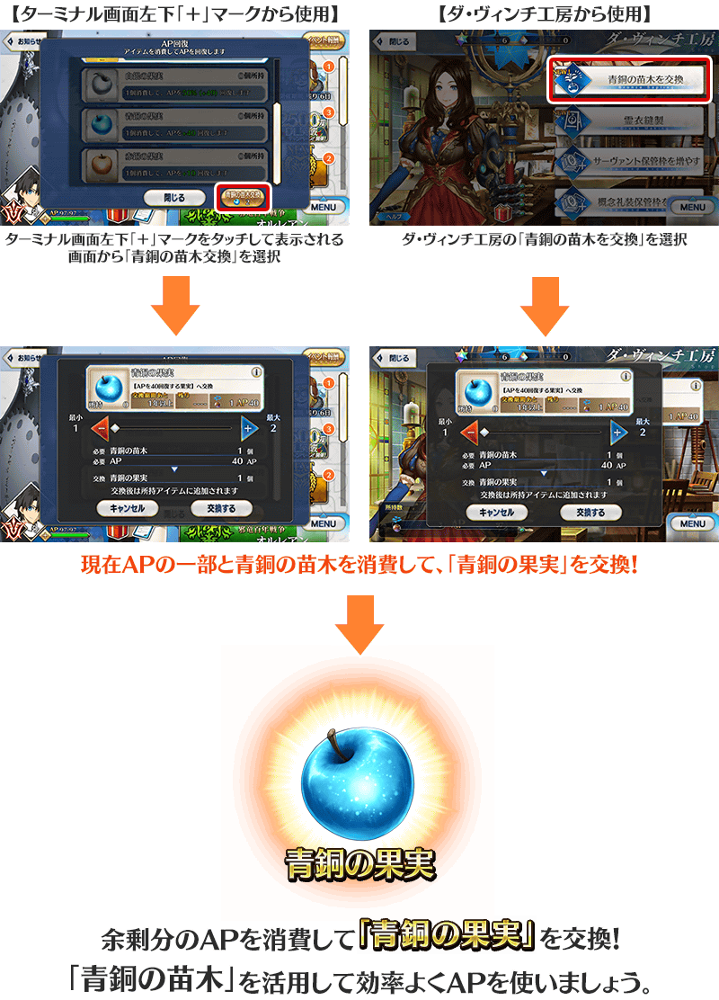
登入獎勵得到「青銅樹苗」！
下述的期間中進行登入至「Fate/Grand Order」的話贈送青銅樹苗 3個！
得到新道具的青銅樹苗，快試著活用吧！
◆領取期間◆
2022年5月11日(三) 19:00～5月18日(三) 11:59
上述期間中，在初次登入「Fate/Grand Order」的時間點，贈予到禮物箱。 ※禮物只能領取1次。
◆贈送內容◆
青銅樹苗 3個
◆贈送對象◆
所有的御主對象
※新御主玩家必須在2022年5月18日(三) 11:59前推進至通過「特異點F 炎上汙染都市 冬木 第3節 進行度1」。
下述的期間中，在進行從者及概念禮裝的強化時，大成功(經驗值2倍加成)・極大成功(經驗值3倍加成)發生機率以期間限定變成2倍！
務必藉此機會強化中意的從者和概念禮裝吧！
※概念禮裝強化＆進化時的大成功・極大成功的獲得EXP增加不適用在「累積EXP」。
◆舉辦期間◆
2022年5月11日(三) 19:00～5月18日(三) 11:59
以期間限定在迦勒底之門內開放全種類每日出現的關卡「蒐集種火」與「修練場」。
◆舉辦期間◆
2022年5月11日(三) 19:00～5月18日(三) 11:59
◆對象關卡◆
・蒐集種火
【2500萬DL突破記念】週一 蒐集種火<殺・槍篇>初級～極級
【2500萬DL突破記念】週二 蒐集種火<騎・劍篇>初級～極級
【2500萬DL突破記念】週三 蒐集種火<術・弓篇>初級～極級
【2500萬DL突破記念】週四 蒐集種火<槍・殺篇>初級～極級
【2500萬DL突破記念】週五 蒐集種火<劍・騎篇>初級～極級
【2500萬DL突破記念】週六 蒐集種火<弓・術篇>初級～極級
【2500萬DL突破記念】週日 蒐集種火<隨機篇>初級～極級
・修練場
【2500萬DL突破記念】週一 弓之修練場 初級～極級
【2500萬DL突破記念】週二 槍之修練場 初級～極級
【2500萬DL突破記念】週三 狂之修練場 初級～極級
【2500萬DL突破記念】週四 騎之修練場 初級～極級
【2500萬DL突破記念】週五 術之修練場 初級～極級
【2500萬DL突破記念】週六 殺之修練場 初級～極級
【2500萬DL突破記念】週日 劍之修練場 初級～極級
※以期間限定出現的「蒐集種火」及「修練場」會繼承「關卡情報」到平常每天輪流出現的「蒐集種火」及「修練場」關卡。
※每日關卡的詳細如下。
【每日關卡一覧】
| 曜日 | 關卡名 | 做為戰利品可獲得的 主要道具 |
攻略推薦 職階 |
|---|---|---|---|
| 一 | 【2500萬DL突破記念】 週一 弓之修練場 |
Archer的靈基再臨用道具、Archer的技能強化素材道具 |  |
| 【2500萬DL突破記念】 週一 蒐集種火<殺・槍篇> |
Assassin、Lancer、Berserker的經驗值卡 |   |
|
| 二 | 【2500萬DL突破記念】 週二 槍之修練場 |
Lancer的靈基再臨用道具、Lancer的技能強化素材道具 | |
| 【2500萬DL突破記念】 週二 蒐集種火<騎・劍篇> |
Rider、Saber、Berserker的經驗值卡 |   |
|
| 三 | 【2500萬DL突破記念】 週三 狂之修練場 |
Berserker的靈基再臨用道具、Berserker的技能強化素材道具 | ALL |
| 【2500萬DL突破記念】 週三 蒐集種火<術・弓篇> |
Caster、Archer、Berserker的經驗值卡 |  |
|
| 四 | 【2500萬DL突破記念】 週四 騎之修練場 |
Rider的靈基再臨用道具、Rider的技能強化素材道具 |  |
| 【2500萬DL突破記念】 週四 蒐集種火<槍・殺篇> |
Lancer、Assassin、Berserker的經驗值卡 | |
|
| 五 | 【2500萬DL突破記念】 週五 術之修練場 |
Caster的靈基再臨用道具、Caster的技能強化素材道具 | |
| 【2500萬DL突破記念】 週五 蒐集種火<劍・騎篇> |
Saber、Rider、Berserker的經驗值卡 | |
|
| 六 | 【2500萬DL突破記念】 週六 殺之修練場 |
Assassin的靈基再臨用道具、Assassin的技能強化素材道具 | |
| 【2500萬DL突破記念】 週六 蒐集種火<弓・術篇> |
Archer、Caster、Berserker的經驗值卡 | |
|
| 日 | 【2500萬DL突破記念】 週日 劍之修練場 |
Saber的靈基再臨用道具、Saber的技能強化素材道具 | |
| 【2500萬DL突破記念】 週日 蒐集種火<隨機篇> |
Saber、Archer、Lancer、Rider、Caster、Assassin、Berserker的經驗值卡(隨機) | - |
※Berserker在所有每日關卡皆為有效職階。
「★4(SR)帕西瓦爾」的「幕間物語」在迦勒底之門永久的追加。
◆追加時間◆
2022年5月17日(二) 17:00～
※幕間物語為日後追加，與「2500萬DL突破宣傳活動」的開始時間不同。
|
◆關卡開放條件◆ |
◆「幕間物語」平常開放的注意◆ ※未持有「★4(SR)帕西瓦爾」的情況，關卡不會出現。 ※關卡沒有舉辦期限。
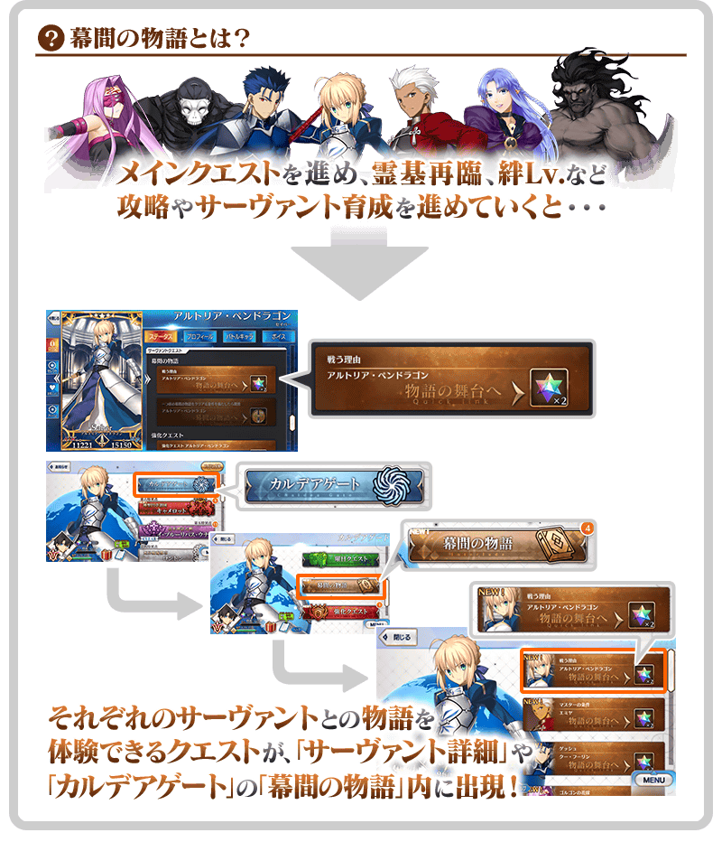
為了記念「250萬DL突破宣傳活動」舉辦，在達文西工房的「稀有稜鏡交換」永久追加『魔力稜鏡交換「フリー・シーティング」開放權』。
『魔力稜鏡交換「フリー・シーティング」開放權』為在「魔力稜鏡交換」開放「★5(SSR)フリー・シーティング」的權利，關於實際交換1次需要魔力稜鏡1000個。
◆追加時間◆
2022年5月11日(三) 19:00～
| 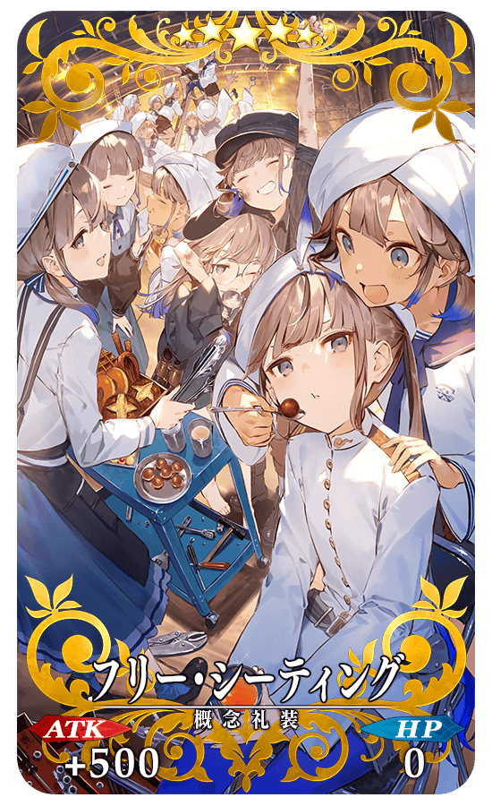 |
★★★★★SSR ◆最大解放時效果◆ |
◆追加道具(永久)◆
| 追加道具 | 能交換次數 | 1次交換所需的 稀有稜鏡數 |
|---|---|---|
| 魔力稜鏡交換「フリー・シーティング」開放權 | 1次 | 1個 |
※在「稀有稜鏡交換」追加的『魔力稜鏡交換「フリー・シーティング」開放權』為永久，沒有交換期限。 ※已經交換5張「★5(SSR)フリー・シーティング」的玩家，無法交換『魔力稜鏡交換「フリー・シーティング」開放權』。 ※關於已經交換1～4張「★5(SSR)フリー・シーティング」的玩家，只會開放未交換份。不管能交換張數，所需的稀有稜鏡的交換數不會改變(已經交換4張的情況只會開放1張份)。
在2018年舉辦的期間限定活動「復刻:達文西與七人的贋作英靈 輕量版」中登場的「★5(SSR)貞德〔Alter〕(Avenger)」的靈衣「邪龍的魔女ver新宿1999」開放權，在達文西工房的「靈衣縫製」追加！
用稀有稜鏡5個交換後，可入手上述靈衣開放權。
並且，有通過「亞種特異點Ⅰ 惡性隔絕魔境 新宿」的情況可免費交換靈衣「邪龍的魔女ver新宿1999」開放權！
另外，想靈衣開放的話，除了靈衣開放權外再加上必須滿足一些開放條件。
◆追加時間◆
2022年5月11日(三) 19:00～
◆交換條件◆
滿足以下條件的御主才能交換
・通過「第一特異點 邪龍百年戰爭 奧爾良」
・未入手靈衣「邪龍的魔女ver新宿1999」開放權
※追加到「靈衣縫製」的靈衣「邪龍的魔女ver新宿1999」開放權為永久，沒有交換期限。 ※關於已經取得交換對象靈衣開放權的玩家，無法交換。 ※在用稀有稜鏡5個交換靈衣「邪龍的魔女ver新宿1999」開放權後達成免費化條件的情況，會返還交換使用的稀有稜鏡5個到禮物箱。
◆靈衣開放權交換免費化的條件◆
滿足以下條件的御主才能免費交換
・通過「亞種特異點Ⅰ 惡性隔絕魔境 新宿」
◆有關靈衣開放權的注意◆
※「★5(SSR)貞德〔Alter〕(Avenger)」的靈衣會隨著外觀變化一部份份語音。
※請注意未持有「★5(SSR)貞德〔Alter〕(Avenger)」的情況，可入手靈衣開放權。但無法進行靈衣開放。
◆追加道具(永久)◆
| 追加道具 | 能交換次數 | 1次交換所需的 稀有稜鏡數 |
|---|---|---|
| 靈衣「邪龍的魔女ver新宿1999」開放權 | 1次 |
5個 有通過「亞種特異點Ⅰ 惡性隔絕魔境 新宿」的情況就能免費交換！ |

「靈衣開放」是自強化畫面進行。
※「靈衣開放」後會自動切換戰鬥角色和外觀圖片。若想回到「靈衣開放」前的狀態和變成其他再臨階段的情況，可自從者詳細畫面變更。 ※進行「靈衣開放」不會讓職階和能力等有所變化。
介紹貞德〔Alter〕(Avenger)靈衣開放後的寶具演出！
介紹開放靈衣「邪龍的魔女ver新宿1999」的「★5(SSR)貞德〔Alter〕(Avenger)」寶具演出！
向所有御主對象，在達文西工房內的「從者保管欄位增加」「概念禮裝保管欄位增加」，消耗魔力稜鏡可追加的保管欄位上限數，再追加20次份(合計100欄位份)。
◆翻新實施時間◆
2022年5月11日(三) 19:00～
【保管欄位的擴張數】
| 對象保管欄位 | 剩餘次數 | 最大擴張時 |
|---|---|---|
| 從者保管欄位增加 | 160→180(追加20次份) | 900→1000(追加100欄位) |
| 概念禮裝保管欄位增加 | 160→180(追加20次份) | 900→1000(追加100欄位) |
※請注意在從者保管欄位的擴張及概念禮裝保管欄位的擴張，關於1次的擴張需要魔力稜鏡50個。
目前為止最多5名的跟隨上限數、擴張到最多10名！
活用更擴充的支援，以通過主線關卡為目標吧！
◆翻新實施時間◆
2022年5月11日(三) 19:00～
面相剛開始遊戲的玩家，在遊戲開始後的教學中進行的聖晶石召喚中，翻新成為抽出對象的從者！
此11回召喚中で確定1位★4(SR)從者1騎、1張★4(SR)概念禮裝。
◆翻新實施時間◆
2022年5月11日(三) 19:00～
新成為召喚對象★4(SR)從者為以下的14位！
◆召喚對象★4(SR)從者◆
| 職階 | 稀有度 | 從者名 |
|---|---|---|
| Saber | ★★★★ | 拉克什米・芭伊 |
| ★★★★ | 渡邊綱 | |
| Archer | ★★★★ | Emiya |
| ★★★★ | 潔諾比亞 | |
| Lancer | ★★★★ | 伊莉莎白・巴托里 |
| ★★★★ | 瓦爾基里 | |
| Rider | ★★★★ | 阿斯托爾福 |
| ★★★★ | 多布雷尼亞・尼基季奇 | |
| Caster | ★★★★ | 喀耳刻(俄刻阿諾斯的Caster) |
| ★★★★ | 尼托克里絲 | |
| Assassin | ★★★★ | 燕青(新宿的Assassin) |
| ★★★★ | 絲西娜 | |
| Berserker | ★★★★ | 玉藻貓 |
| ★★★★ | 海克力斯 |
一部份從者的寶具演出對應了全螢幕顯示。
◆翻新實施時間◆
2022年5月11日(三) 19:00～
◆全螢幕顯示對應從者◆
| 職階 | 稀有度 | 從者名 |
|---|---|---|
| Saber | ★★★★★ | 兩儀式 |
| ★★★★ | 葛飾北齋 | |
| ★★★★ | 弗蘭肯斯坦 | |
| ★★★ | 蓋烏斯・尤利烏斯・凱撒 | |
| ★ | 伊阿宋 | |
| Archer | ★★★★★ | 阿爾托莉亞・潘德拉剛 |
| ★★★★★ | 俄里翁 | |
| ★★★★★ | 貞德 | |
| ★★★★ | 阿提拉・the・San〔誕〕 | |
| ★★★★ | 伊莉雅絲菲爾・馮・愛因茲貝倫 | |
| ★★★★ | 刑部姬 | |
| ★★★★ | 災星簡 | |
| ★★★★ | 克洛伊・馮・愛因茲貝倫 | |
| ★★★★ | 南丁格爾〔聖誕〕 | |
| ★★★ | 尤瑞艾莉 | |
| ★★★ | 羅賓漢 | |
| Lancer | ★★★★★ | 布拉達曼特 |
| ★★★★ | 茨木童子 | |
| ★★★★ | 宇津見繪里世 | |
| ★★★★ | 清姬 | |
| ★★★★ | 虞美人 | |
| ★★★★ | 貞德・Alter・聖誕・Lily | |
| ★★★★ | 秦良玉 | |
| ★★★★ | 謎之Alterego・Λ | |
| ★★★★ | 源賴光 | |
| ★★★ | 赫克特 | |
| ★★ | 加雷斯 | |
| Rider | ★★★★★ | 阿爾托莉亞・潘德拉剛〔Alter〕 |
| ★★★★★ | 伊斯坎達爾 | |
| ★★★★★ | 歐羅巴 | |
| ★★★★ | 瑪莉・安東尼 | |
| ★★★★ | 瑪爾大 | |
| ★★★★ | 莫德雷德 | |
| ★★★ | 克里斯多福・哥倫布(反抗軍的Rider) | |
| Caster | ★★★★★ | 阿爾托莉亞・Caster |
| ★★★★★ | 尼祿・克勞狄烏斯 | |
| ★★★★★ | 紫式部 | |
| ★★★★ | 喀耳刻(俄刻阿諾斯的Caster) | |
| ★★★★ | 齊格 | |
| ★★★★ | 湯瑪斯・愛迪生 | |
| ★★★★ | 童謠 | |
| ★★★★ | 瑪莉・安東尼 | |
| ★★★★ | 美狄亞〔Lily〕 | |
| ★★★ | 美狄亞 | |
| Assassin | ★★★★ | Emiya〔Assassin〕 |
| ★★★★ | 虞美人 | |
| ★★★★ | 格蕾 | |
| ★★★★ | 斯卡哈 | |
| ★★★★ | 絲西娜 | |
| ★★★★ | 尼托克里絲 | |
| ★★★★ | 兩儀式 | |
| ★★★ | 荊軻 | |
| ★★★ | 靜謐的哈桑 | |
| ★ | 佐佐木小次郎 | |
| ★ | 夏綠蒂・科黛 | |
| Berserker | ★★★★★ | 項羽 |
| ★★★★★ | 宮本武藏 | |
| ★★★★ | 貞德〔Alter〕 | |
| ★★★★ | 布倫希爾德 | |
| ★★★★ | 海克力斯 | |
| ★★★ | 清姬 | |
| ★ | 保羅・班揚(看漫畫了解Berserker) | |
| Ruler | ★★★★★ | 阿爾托莉亞・潘德拉剛 |
| ★★★★★ | 始皇帝 | |
| ★★★★ | 阿斯特蕾亞 | |
| ★★★★ | 魁札爾・科亞特爾〔森巴／聖誕〕 | |
| ★★★★ | 瑪爾大 | |
| Alterego | ★★★★★ | 殺生院祈荒 |
| MoonCancer | ★★★★★ | 吉娜可＝加里吉利(偉大石像神) |
| ★★★★★ | 殺生院祈荒 | |
| ★★★★ | BB | |
| Foreigner | ★★★★★ | Voyager |
※「★5(SSR)吉娜可＝加里吉利(偉大石像神)」是「★5(SSR)偉大石像神」靈基再臨到第2階段後名稱變成「★5(SSR)吉娜可＝加里吉利」。
在2022年5月11日(三)維修後反映的更新內容之中，介紹代表性的內容。
◆追加時間◆
2022年5月11日(三) 17:00～
御主任務報酬的一括領取功能追加
御主任務的「Weekly」「Extra」「限定」標籤內中，追加一次全領取達成任務報酬的功能。
在御主任務畫面的「達成的任務欄」有1個能領取的報酬的情況，點擊「一次全領取」鍵後可一次全領取各標籤內的報酬。
※由於御主任務的「每日」標籤的報酬在達成時會自動領取，為本功能對象外。
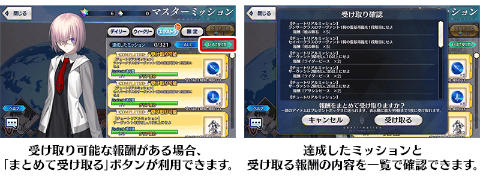
更容易了解支援從者使用的狀況
在支援編成設定的從者在好友和跟隨使用時的状況，變得在友情點數獲得對話框上會更容易了解顯示。
修改後的友情點數獲得對話框，除了獲得的友情點數外，也可確認最被使用的從者。
【5月11日(三) 20:00追記】
※在維修後的初次登入時，會有顯示「沒有被使用從者的情報」的情況，友情點數的獲得仍正常進行。
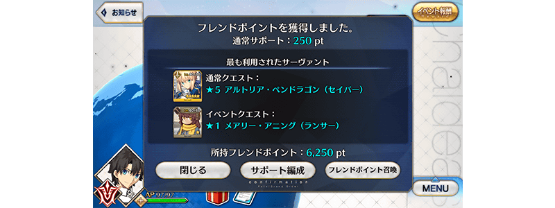
關卡的初次通過報酬演出修改成總結顯示
在主線關卡和自由關卡的初次通過時可獲得的通過報酬的演出變得會總結顯示。 ※聖杯和傳承結晶等一部份重要道具的獲得演出會分開進行。
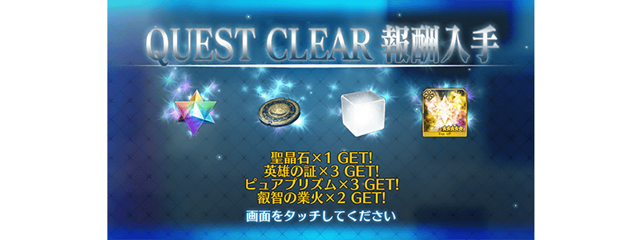
遊戲選項的「從者的初次寶具演出等倍設定」修改
修改就算「BATTLE SPEED」倍速也會將初見的寶具演出強制等倍速的「從者的初次寶具演出等倍設定」。
修改前只限持有從者的寶具演出的適用本功能，修改後變得也適用支援從者和敵人使用的寶具。另外，就算看過一遍支援從者和敵人使用的寶具，變得在持有從者初次使用寶具時會再度強制等倍速播放。
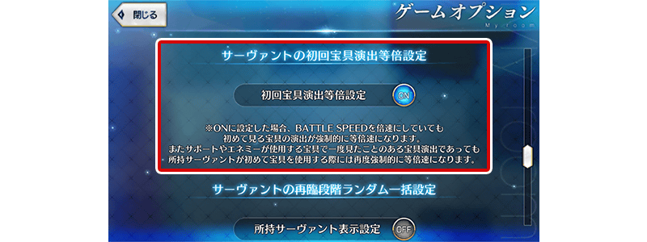
其他還有，
・2500萬DL記念 阿爾托莉亞・Caster Pick Up召喚
・2500萬DL記念Pick Up召喚
以期間限定舉辦！
關於詳情，請自下述橫幅確認。
■「2500萬DL記念 阿爾托莉亞・Caster Pick Up召喚」詳細情報

■「2500萬DL記念Pick Up召喚」詳細情報